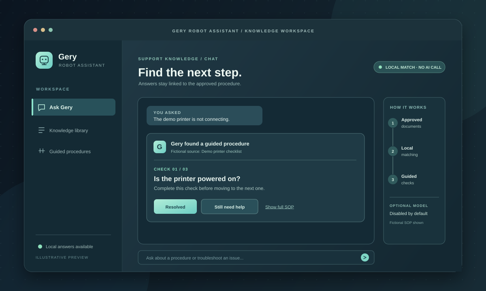

BUILT PROJECT / INTERNAL TOOLS + KNOWLEDGE
Gery Robot Assistant
A document-backed support assistant that returns approved procedures, cites their source, and can guide a technician through one troubleshooting check at a time.
- ROLE
- Assistant workflow and application development
- FORMAT
- Node.js service, chat page and embedded widget
- TOOLS
- JavaScript, Express, REST API, Docker, local document indexing
- STATUS
- Public source; deployment status unverified

The problem
Support procedures lose value when someone has to search several files, guess which answer is current, or skip a check in a long troubleshooting list. An assistant for operational work needs to stay close to approved documentation and make its source visible.
What I built
- A Node.js and Express service that extracts text from Markdown, text, and PDF documents, sections it, and saves a reusable local knowledge index.
- A
/chatendpoint that matches questions to stored answers and returns source information. Normal matched answers do not call a model. - A guided troubleshooting flow that reads an ordered SOP, asks one check at a time, and offers a full-procedure view or a way to cancel.
- A standalone chat page, a widget designed for the NVGS dashboard and DownloadServer, and a token-gated knowledge manager for uploading, reprocessing, and removing documents.
Where AI fits
The code includes an optional OpenAI-compatible chat-completions client. If enabled, it can suggest search questions and keywords when documents are processed, or answer an unmatched question using nearby stored context. Both switches are off by default. The documented answer remains the approved source text; an unavailable model does not prevent local retrieval. The public code supports the integration, but I have not verified that a model endpoint has been used in a live workflow.
Operating procedure
- Approve and add the source
Upload an approved Markdown, text, or PDF procedure through the token-gated manager. Internal SOP files and the processed index stay outside the public repository.
- Process and inspect
Build the local index, check the document and guided-flow counts, and review whether the procedure has ordered checks, confirmation prompts, and escalation guidance.
- Ask and follow the source
Use the chat page or embedded widget. Follow the cited answer or work through the guided checks in order; open the full SOP when more context is needed.
- Handle gaps and maintain it
If no confident match exists, the default response directs the person to support rather than inventing steps. Update the approved document and reprocess the index when the procedure changes.
Engineering evidence
The public repository contains the Express routes, retrieval and guided-troubleshooting services, model-client adapter, Docker configuration, and Node test files for retrieval, knowledge storage, guided flows, prompts, and model URL handling. The manager requires a bearer token; remote administration is restricted to HTTPS by default. The source describes a health check and a same-origin widget bootstrap so the assistant appears only when the service responds.
View public source and setup notes ↗Outcome and limits
The implementation provides a repeatable path from approved documents to cited answers and guided checks. Its design reduces the need for a model call on routine matched questions, but no measured time saving, answer accuracy rate, or production usage result is available here. The deployment status and any actual model endpoint use remain to be confirmed.